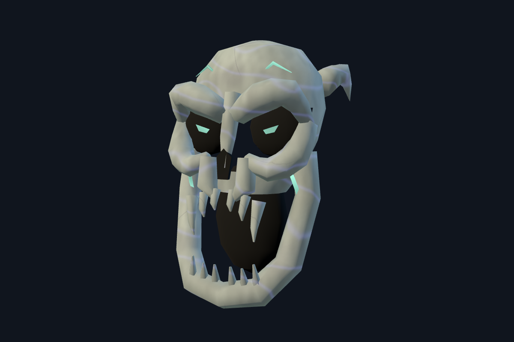
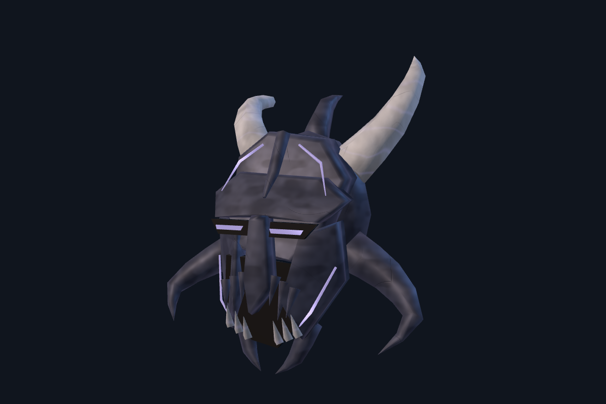
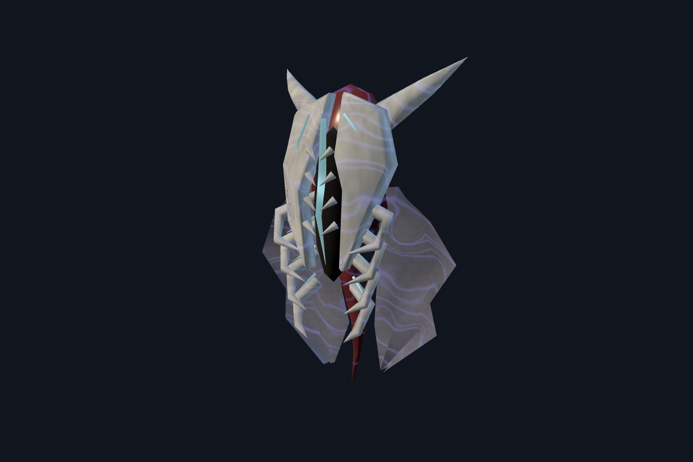
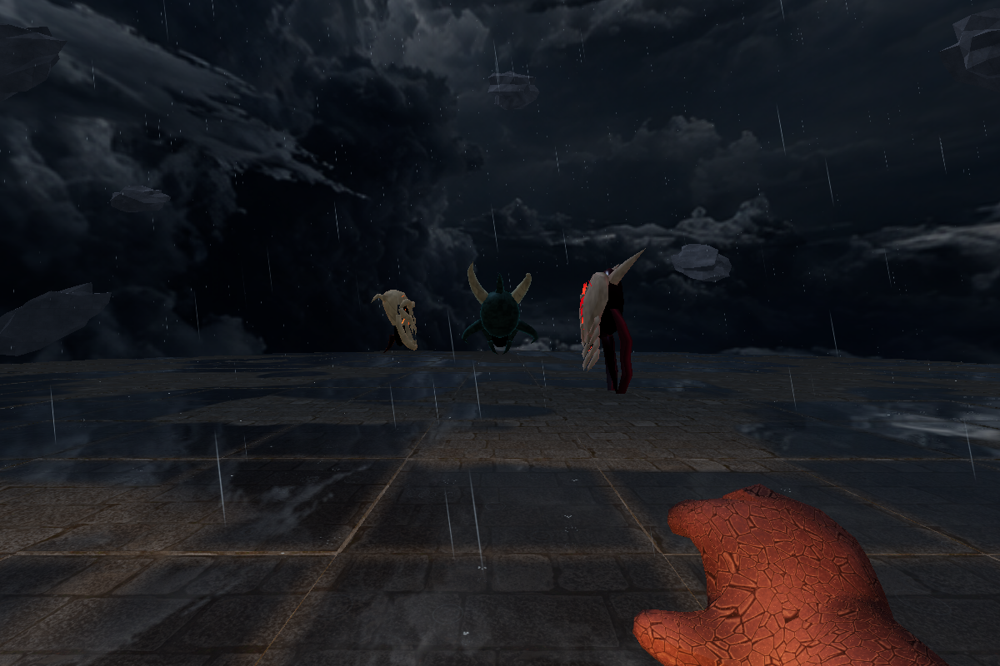
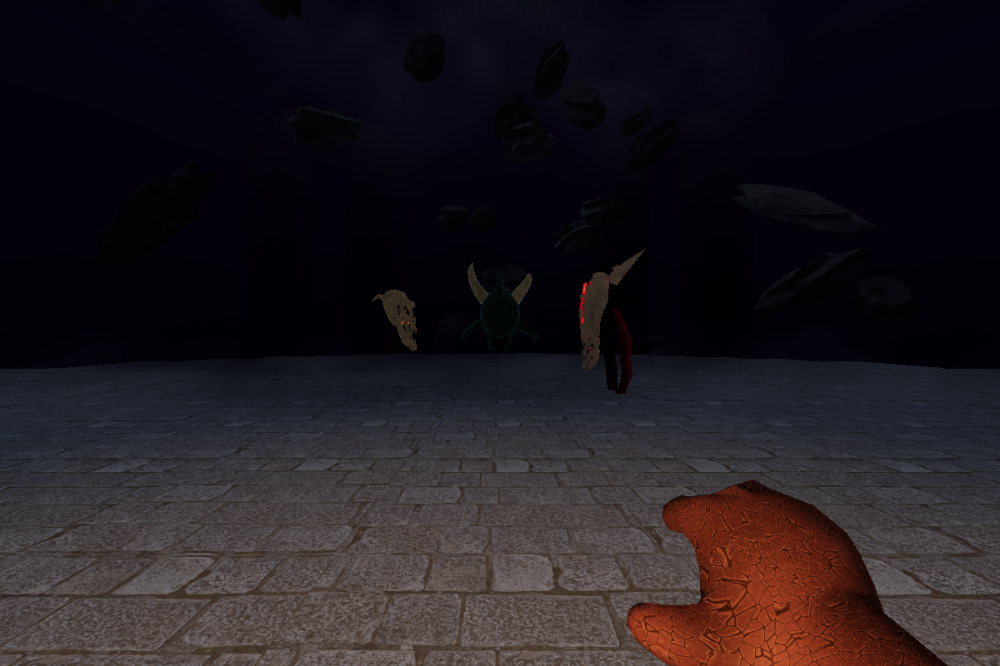
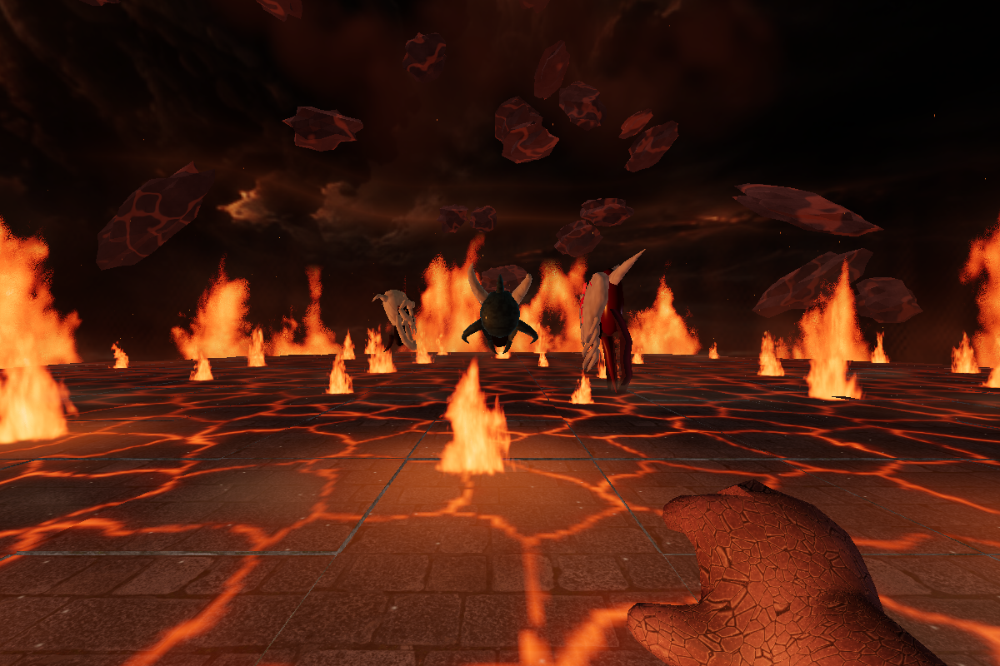

Skull 1
Hollow Shrieker
Connected bone anatomy, recessed sockets and a continuous mandible. Embedded amber channels.

Connected bone anatomy, recessed sockets and a continuous mandible. Embedded amber channels.

Iron death mask, buried visor, serrated maw and broken swept-back horns. Embedded cyan inlays.

Split ivory face, exposed ribs and folded hanging tissue. Embedded crimson capillaries.


